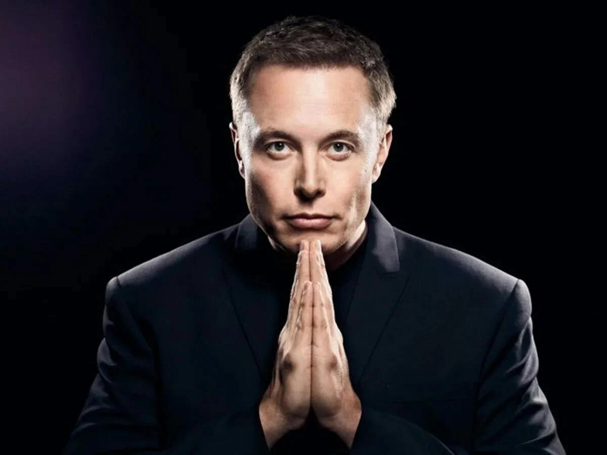

Илон Маск - Американский предприниматель, инженер, миллиардер.

Маск родился и вырос в Претории, ЮАР Некоторое время учился в Преторийском университете, а в 17 лет переехал в Канаду.
Поступил в Университет Куинс в Кингстоне и через два года перевёлся в Пенсильванский университет, где получил степень бакалавра по экономике и физике.
В 1995 году переехал в Калифорнию, чтобы учиться в Стэнфордском университете, но вместо этого решил заняться бизнесом и вместе со своим братом Кимбалом,
стал соучредителем компании Zip2, занимавшейся разработкой программного обеспечения для интернета.
В 1999 году компания была приобретена Compaq за 307 миллионов долларов. В том же году Маск стал соучредителем онлайн-банка X.com,
который в 2000 году конгломеративным путем консолидировался с Confinity и образовал PayPal. В 2002 году компания была куплена eBay за 1,5 миллиарда долларов.
SpaceX
В 2002 году Маск основал SpaceX, компанию по производству аэрокосмической техники и оказанию услуг космического транспорта,
генеральным директором и главным инженером которой он является. В 2004 году он присоединился к производителю электромобилей Tesla
в качестве председателя совета директоров и архитектора проекта, а в 2008 году стал её генеральным директором.
В 2006 году он помог создать SolarCity, компанию по предоставлению услуг в области солнечной энергии,
которая впоследствии была приобретена Tesla и стала Tesla Energy. В 2015 году он стал соучредителем OpenAI,
некоммерческой исследовательской компании, которая занимается продвижением искусственного интеллекта.
В 2016 году он стал соучредителем Neuralink, нейротехнологической компании, занимающейся разработкой интерфейсов мозг-компьютер,
и основал The Boring Company, компанию по строительству туннелей. Маск предложил идею Hyperloop — высокоскоростную систему транспортировки на вакуумном поезде.
Twitter
В 2022 году стал владельцем Twitter за 44 миллиарда долларов.
За выдающиеся заслуги перед наукой 9 мая 2018 года удостоен членства Лондонского королевского общества.
В декабре 2021 года журнал Time признал Илона Маска «Человеком года»
Карьера
- Zip2
- X.com (1999—2000) и PayPal
- SpaceX
- Tesla
- SolarCity
- OpenAI
- Neuralink
- The Boring Company
- Twitter
Годы правления в компании
| Компания | Годы правления |
| Zip2 | 1995-1999 |
| X.com и PayPal | (1999—2000) |
| SpaceX | 2002 - по н.в |
| Tesla | 2004 - по н.в |
| SolarCity | 2006 - по н.в |
| OpenAI | 2015-2018 |
| Neuralink | 2016 - по н.в |
| The Boring Company | 2016 - по н.в |
| Twitter | 2022 |